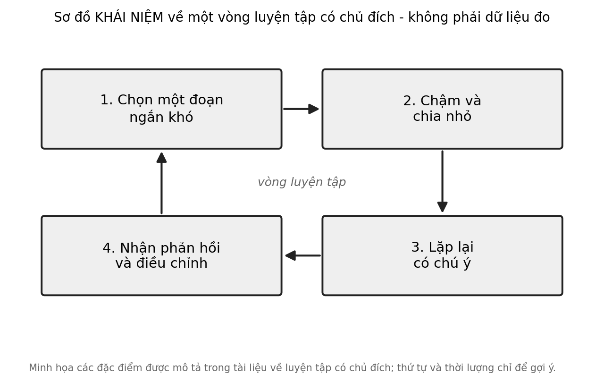

11 Kỹ thuật và biểu đạt
Một em học sinh chơi một đoạn nhạc khó, đúng từng nốt, đều từng nhịp. Cô giáo gật đầu rồi hỏi: “Em muốn người nghe cảm thấy điều gì ở đoạn này?” Em im lặng. Em chưa nghĩ đến điều đó, vì suốt nhiều tuần em chỉ lo cho các ngón tay đi đúng. Kỹ thuật đã có. Còn điều kỹ thuật để phục vụ thì sao?
Câu hỏi trung tâm
Kỹ thuật phục vụ biểu đạt như thế nào, và luyện tập hiệu quả khác luyện tập nhiều ở chỗ nào? Chương này đi qua một số khái niệm có thật, như luyện tập có chủ đích và tự động hóa, đồng thời nói thẳng về những phê bình đối với các tuyên bố quá mạnh: luyện tập quan trọng, nhưng không giải thích hết sự khác biệt giữa người này với người kia. Chương cũng nói về một rủi ro rất thực tế ở nhiều nền giáo dục: văn hóa thi cử có thể kéo kỹ thuật tách khỏi biểu đạt.
Bốn thuật ngữ nền
Luyện tập có chủ đích (deliberate practice) là những hoạt động có cấu trúc, được thiết kế riêng để cải thiện một khía cạnh của kỹ năng, thường có mục tiêu rõ, sự tập trung, phản hồi và việc làm đúng những điều còn khó. Tự động hóa (automaticity) là khi một kỹ năng được thực hiện mà ít cần chú ý có ý thức. Biểu đạt (expression) là những lựa chọn của người trình diễn về nhịp, cường độ và sắc thái để truyền một ý nghĩa nhạc. Nghe nội tâm là khả năng hình dung âm thanh trong đầu trước khi tạo ra nó.
Cách đọc chương này
Chương nói về một chủ đề mà công chúng có nhiều niềm tin quen thuộc: “chỉ cần mười nghìn giờ”, “có năng khiếu hay không”. Cả hai đều quá đơn giản. Chúng ta sẽ đi theo năm bước: luyện tập có chủ đích và bằng chứng gốc; phê bình và tranh luận; tự động hóa và giải phóng chú ý; biểu đạt và nghe nội tâm; và rủi ro thi cử. Chương kết thúc bằng một hoạt động luyện chậm, chia nhỏ, lặp có phản hồi.
Một điều cần nói trước: chương này dùng nhiều số liệu về phương sai và tương quan. Chúng ta sẽ giải thích mỗi con số khi gặp, và nhắc rằng một con số về nhóm không nói được điều gì đáng tin về một em cụ thể.
1. Luyện tập có chủ đích và bằng chứng gốc
Khái niệm luyện tập có chủ đích xuất phát từ một nghiên cứu về học sinh vĩ cầm ở một học viện âm nhạc, so sánh nhóm được đánh giá là giỏi nhất với các nhóm khác. Các tác giả báo cáo rằng nhóm giỏi nhất đã tích lũy nhiều giờ luyện tập một mình hơn, và họ đề xuất rằng chính loại luyện tập có cấu trúc này là yếu tố then chốt của sự chuyên môn hóa Sơ bộ (K. A. Ericsson và c.s., 1993). Một nghiên cứu sau đó với những nghệ sĩ piano trẻ và lớn tuổi cho thấy luyện tập duy trì được mức biểu diễn ở tuổi cao Sơ bộ (Krampe & Ericsson, 1996). Và một nghiên cứu về các nhạc công trẻ cho thấy mức thành tích gắn với lượng luyện tập chính thức Sơ bộ (Sloboda và c.s., 1996). Cả ba là nghiên cứu quan sát, dựa nhiều vào hồi tưởng của người tham gia về số giờ đã luyện.
Cần phân biệt ba loại hoạt động mà người ta hay gộp lại: chơi vì vui, luyện tập có cấu trúc để cải thiện, và biểu diễn. Chỉ loại thứ hai được gọi là luyện tập có chủ đích. Một em chơi đàn một giờ mỗi chiều mà chủ yếu chơi lại những bài đã thuộc đang chơi hoặc biểu diễn cho mình nghe, chứ chưa chắc luyện có chủ đích, và điều đó không có gì xấu: chơi vì vui có giá trị riêng của nó. Chỉ là một giờ chơi vì vui và một giờ luyện có chủ đích không nên được cộng lại khi ta nói về “số giờ luyện”.
Điều đáng nhớ nhất không phải con số giờ, mà là cách luyện. Tổng quan của chính nhà đề xuất mô tả luyện tập có chủ đích như những hoạt động có mục tiêu rõ, đòi hỏi sự tập trung, có phản hồi và thường nằm ở ngoài vùng thoải mái của người luyện Giả thuyết (K. A. Ericsson, 2008). Cuốn sách phổ biến về chuyên môn của ông cũng làm rõ rằng “mười nghìn giờ” là một cách diễn đạt đơn giản hóa chứ không phải một quy tắc, và rằng cách luyện quan trọng hơn thời lượng Giả thuyết (A. Ericsson & Pool, 2016).
Trong một lớp học, điều này có hình dạng cụ thể. Một giờ tập thể gồm hai mươi em cùng hát lại cả bài từ đầu đến cuối là luyện lặp lại; mười phút trong đó cả lớp tách một chỗ khó, làm chậm, nghe nhau và sửa là luyện có chủ đích. Nhiều giáo viên đã làm điều thứ hai một cách tự nhiên mà không gọi tên nó. Gọi tên giúp họ làm có ý thức hơn và giải thích cho học sinh vì sao.
Một lưu ý khi áp dụng cho trẻ nhỏ: các nghiên cứu gốc nói về học sinh ở học viện và về người lớn, tức những người đã có khả năng tập trung dài và mục tiêu riêng. Chúng ta không có bằng chứng về việc luyện có chủ đích nên được điều chỉnh thế nào cho trẻ mầm non hoặc tiểu học. Với các em, vui chơi và sự hào hứng có thể là điều kiện cần cho việc luyện, và phiên luyện nên rất ngắn. Đó là một suy luận thận trọng, không phải kết quả đã đo.
Cần nhìn đúng giới hạn của những bằng chứng ấy. Đó là các mẫu nhỏ ở một số nhạc viện và cơ sở đào tạo, nên không đại diện cho đa số người học nhạc. Số giờ luyện được tính từ hồi tưởng, dễ sai lệch. Và tương quan giữa luyện tập và thành tích không cho biết luyện tập là nguyên nhân duy nhất: những người tiếp tục luyện nhiều có thể cũng là những người được dạy tốt hơn, có điều kiện tốt hơn hoặc thích việc luyện hơn. Một lần tái lập hạn chế của nghiên cứu gốc, với cách làm gần giống, báo cáo bức tranh yếu hơn so với diễn giải ban đầu về sự khác biệt giữa các nhóm Sơ bộ (Macnamara & Maitra, 2019).
2. Phê bình: luyện tập quan trọng, nhưng không phải tất cả
Câu hỏi quan trọng là luyện tập có chủ đích giải thích bao nhiêu phần của sự khác biệt về thành tích. Tổng hợp phân tích của Macnamara và cộng sự, gộp 88 nghiên cứu với hơn 11.000 người tham gia, báo cáo rằng luyện tập có chủ đích giải thích khoảng 26% phương sai thành tích ở trò chơi, 21% ở âm nhạc, 18% ở thể thao, 4% ở giáo dục và dưới 1% ở các nghề; các tác giả kết luận rằng luyện tập có chủ đích quan trọng, nhưng không quan trọng như đã được tuyên bố Trung bình (Macnamara và c.s., 2014). Nói theo cách ngược lại, với âm nhạc, phần lớn sự khác biệt, khoảng bốn phần năm, được giải thích bởi những yếu tố khác ngoài lượng luyện tập được đo.
Con số này phụ thuộc vào cách đo. Các tác giả của tổng hợp ấy xem xét những yếu tố điều tiết như lĩnh vực, mức độ có thể dự đoán của thành tích trong lĩnh vực đó, và cách đo luyện tập, gồm bảng hỏi hồi tưởng, phỏng vấn hồi tưởng hay nhật ký luyện tập. Một nhật ký ghi hằng ngày thường đáng tin hơn một lời kể lại sau nhiều năm; và việc chọn cách đo khác nhau là một nguyên nhân khiến các nhóm tác giả đưa ra các ước lượng không giống nhau Trung bình (Macnamara và c.s., 2014).
Một phân tích lại dữ liệu cờ vua và âm nhạc của những nhà nghiên cứu khác ước tính luyện tập có chủ đích giải thích khoảng 30% phương sai ở âm nhạc, và cũng kết luận rằng phần lớn phương sai còn lại do các yếu tố khác Sơ bộ (Hambrick, Oswald, và c.s., 2014). Một tổng hợp phân tích riêng về âm nhạc đã phê bình cách các phân tích trước tính, và theo trích dẫn của chính những người bị phê bình, tìm thấy tương quan khoảng 0,61 giữa luyện tập có chủ đích và thành tích âm nhạc Trung bình (Hambrick, Altmann, và c.s., 2014; Platz và c.s., 2014). Con số này gần mức mà hai bên đều gọi là quan trọng, và cho thấy ngay trong bản phân tích lạc quan nhất, vẫn còn chỗ cho những yếu tố khác.
Cách đọc hợp lý là hai chiều. Luyện tập quan trọng và cách luyện là điều người học và người dạy kiểm soát được. Nhưng chênh lệch về luyện tập không phải toàn bộ câu chuyện, và các nhà nghiên cứu vẫn đang bàn về cách đo và về những yếu tố khác, như tuổi bắt đầu, chất lượng dạy, điều kiện và khác biệt cá nhân. Chúng ta không có cơ sở trong chương này để nói yếu tố nào khác lớn nhất.
Hai cách hiểu sai cần tránh. Một là “chỉ cần luyện đủ lâu là ai cũng đạt được bất cứ điều gì”, là điều số liệu phê bình không ủng hộ. Hai là “không có năng khiếu thì luyện cũng vô ích”, là điều cũng không được ủng hộ, vì luyện tập vẫn giải thích một phần đáng kể và vì ta không có phép thử tin cậy nào để biết ai “có năng khiếu” trước khi họ học. Với người dạy và phụ huynh, hệ quả thực tế là đầu tư vào cách luyện, không dán nhãn một em là có hay không có năng khiếu, và không hứa quá mức với học sinh.
Có một cách nghĩ về năng khiếu không cần dán nhãn ai. Khác biệt cá nhân là có thật: các em bắt đầu ở những điểm khác nhau, tiến với tốc độ khác nhau và thích những thứ khác nhau. Nhưng từ khác biệt ấy, ta không suy ra được ai sẽ đạt được điều gì, vì chúng ta không có phép thử đáng tin để dự đoán điều đó ở trẻ em. Điều có ích hơn là hỏi mỗi em cần gì để tiến bước tiếp theo, chứ không hỏi em có “thuộc về” âm nhạc hay không.
3. Tự động hóa và giải phóng chú ý
Một khung lý thuyết cổ điển mô tả việc học một kỹ năng vận động qua ba giai đoạn: nhận thức, trong đó người học nghĩ rõ từng bước; liên kết, trong đó các bước bắt đầu gắn lại và lỗi giảm; và tự động, trong đó kỹ năng được thực hiện với ít chú ý có ý thức Giả thuyết (Fitts & Posner, 1967). Giá trị của tự động hóa nằm ở chỗ nó giải phóng chú ý. Một nhạc công mà các ngón tay đã biết đường đi có thể dành chú ý cho âm sắc, cho nhịp thở của câu nhạc và cho người nghe.
Bằng chứng từ các nghiên cứu về nhạc công cho thấy bức tranh này có cơ sở. Một nghiên cứu theo dõi một nghệ sĩ piano học và ghi nhớ một bản nhạc phức tạp cho thấy cô chia bản nhạc thành những đoạn lớn và gắn mỗi đoạn với những “điểm đánh dấu” trong lúc chơi, như điểm cần chú ý về kỹ thuật hay điểm cần chú ý về biểu cảm, để trình diễn thuộc lòng mà không phụ thuộc vào ngón tay Sơ bộ (Chaffin & Imreh, 2002). Một tổng quan về biểu diễn âm nhạc mô tả rằng người trình diễn phải lập kế hoạch trước nhiều nốt và điều phối cùng lúc nhịp, cường độ và phân câu Sơ bộ (Palmer, 1997). Cả hai nhất quán với ý tưởng rằng kỹ năng nền tảng được tự động hóa là điều kiện để chú ý được dành cho những điều cao hơn.
Từ đây có thể giữ lại một mệnh đề thận trọng: kỹ thuật là điều kiện cần cho tự do biểu đạt, không phải mục đích cuối. Mệnh đề giải mã thành ba điều. Một kỹ năng chưa tự động buộc người chơi dành chú ý cho việc “đi đúng”, và điều đó hạn chế việc nghĩ về nghĩa. Kỹ thuật vì vậy là phương tiện tạo ra không gian chú ý cho biểu đạt. Và mệnh đề không nói rằng kỹ thuật tốt tự động dẫn đến biểu đạt tốt: một người có kỹ thuật tốt vẫn có thể chơi vô hồn nếu không dành chú ý cho nghĩa, và điều đó dẫn đến mục kế tiếp.
Có một ví dụ quen thuộc ngoài âm nhạc, và nó liên hệ với Chương 6. Khi trẻ mới học đọc, việc giải mã từng chữ chiếm gần hết chú ý, và trẻ ít còn chỗ cho việc hiểu câu chuyện. Khi giải mã đã trở nên nhanh và tự động, chú ý được giải phóng cho việc hiểu. Nghiên cứu ở Hà Nội mà chúng ta đã nhắc cho thấy khả năng giải mã ở lớp Một là dự báo mạnh nhất cho đọc hiểu cùng năm (Pham & Snow, 2021). Âm nhạc có cấu trúc tương tự: kỹ thuật tự động hóa nhường chỗ cho nghĩa.
Một điều cần nhớ để không nói quá: tự động hóa cũng có mặt trái. Một kỹ năng tự động quá mức, nhất là khi luyện lặp lại không chú ý, có thể trở thành thói quen khó thay đổi, kể cả thói quen sai. Đó là lý do vì sao các nhà nghiên cứu nhấn mạnh việc luyện có chú ý và phản hồi chứ không chỉ lặp lại.
Một điều khác cần để ý là sự mệt mỏi. Chú ý có chủ đích là một nguồn lực hữu hạn, và một phiên luyện kéo dài khi người luyện đã mệt thường chỉ làm tăng số lần lặp lại mà không tăng chất lượng. Người dạy và phụ huynh có thể dùng một dấu hiệu đơn giản để dừng: khi lỗi bắt đầu tăng hoặc khi em bắt đầu hát hay chơi cho xong, đó là lúc nghỉ. Đây là một thực hành quen thuộc, và chúng ta không có số đo riêng cho từng độ tuổi Thực tiễn sư phạm.
4. Biểu đạt và nghe nội tâm
Biểu đạt có thể được nghiên cứu như một thứ có cấu trúc. Một tổng quan lớn về biểu diễn âm nhạc mô tả rằng người trình diễn thay đổi một cách có hệ thống nhịp độ, cường độ và cách ngắt nối giữa các nốt so với những gì ghi trên bản nhạc, và những thay đổi ấy liên quan đến cấu trúc của tác phẩm cũng như ý định biểu cảm của người chơi Sơ bộ (Gabrielsson, 1999). Một tổng quan khác về truyền đạt cảm xúc trong biểu diễn cho thấy người nghe có thể nhận ra một số cảm xúc mà người chơi định truyền, dựa trên những tín hiệu như tốc độ và cường độ Sơ bộ (Juslin & Persson, 2002).
Điều này có ý nghĩa cho việc dạy. Nó gợi ý rằng biểu đạt không chỉ là điều dành cho người có năng khiếu mà là một tập hợp lựa chọn có thể được nói ra, nghe lại và điều chỉnh, như chơi chậm hơn ở cuối câu hay nhẹ hơn ở chỗ nhắc lại. Một giáo viên có thể hỏi học sinh: “Em muốn đoạn này nghe như thế nào, và em sẽ làm gì để nó nghe như vậy?” Câu hỏi này chuyển biểu đạt từ điều mơ hồ sang điều có thể thử.
Cũng cần nói rằng quy ước biểu đạt khác nhau giữa các truyền thống. Trong nhiều truyền thống âm nhạc, kể cả truyền thống Việt, người trình diễn thường được mô tả là dùng những cách trang điểm giai điệu như luyến, láy và nhấn nhả để tạo nên sắc thái. Chúng ta chưa có dữ liệu thực nghiệm trong chương này về cách trẻ em Việt học những quy ước ấy, và điều đó là một khoảng trống đáng được lấp: người dạy có thể hỏi các nghệ nhân và người hát ở địa phương, và học sinh có thể học từ nghe và bắt chước trực tiếp Thực tiễn sư phạm.
Nghe nội tâm là phần đi cùng. Một giáo trình về tâm lý học cho nhạc công mô tả việc hình dung trước âm thanh như một phần của luyện tập có hiệu quả, cùng với việc lập kế hoạch cho câu nhạc và đặt mục tiêu nghe được Giả thuyết (Lehmann và c.s., 2007). Chúng ta không có bằng chứng thực nghiệm riêng cho từng kỹ thuật nghe nội tâm ở trẻ em, nên cách thực hành dưới đây là hợp lý nhưng chưa được kiểm chứng.
Ở trường, điều này gợi ý một thói quen đơn giản: trước khi chơi hoặc hát một đoạn, hãy cho học sinh nghe thầm nó trong đầu, hát khẽ trong tâm trí rồi mới thực hiện, và so sánh với điều vừa nghe ra. Đây là một thực hành sư phạm quen thuộc, và chương này không có thử nghiệm đối chứng để xác nhận hiệu quả Thực tiễn sư phạm.
5. Chú ý có chủ đích: luyện chậm, chia nhỏ, lặp có phản hồi
Từ các nghiên cứu về cách nhạc công luyện tập, có một số nguyên tắc thực tế. Một tổng quan về các chiến lược luyện tập cá nhân mô tả rằng người luyện hiệu quả thường dành nhiều thời gian cho những đoạn khó, chơi chậm hơn, chia nhỏ tác phẩm và theo dõi lỗi của mình, thay vì chơi lại từ đầu đến cuối Sơ bộ (Jørgensen, 2004). Nghiên cứu về nghệ sĩ piano ở mục 3 cũng cho thấy việc luyện được chia đoạn và có điểm đánh dấu rõ ràng Sơ bộ (Chaffin & Imreh, 2002).
Chúng ta gọi cách luyện này là chú ý có chủ đích, và cố ý tránh ngôn ngữ phóng đại. Không có điều gì kỳ lạ ở đây: khi người luyện biết mình đang cố cải thiện điều gì, nghe được kết quả và điều chỉnh, họ luyện hiệu quả hơn so với khi chơi lặp lại trong lúc nghĩ chuyện khác. Hình dưới đây tóm tắt một vòng như vậy.

Có ba điều cần giữ ở đây. Phản hồi có thể đến từ giáo viên, từ bạn, từ bản ghi âm hay từ chính tai của người luyện. Đoạn nhỏ nên đủ khó để cần cố gắng nhưng không khó đến mức nản. Và thời gian luyện nên ngắn đủ để giữ chú ý: một vòng năm phút tập trung thường có ích hơn nửa giờ lặp lại thờ ơ. Đây là suy luận từ các mô tả luyện tập có chủ đích, chưa phải một thử nghiệm riêng với trẻ em ở Việt Nam Thực tiễn sư phạm.
Để cụ thể, đây là một kế hoạch luyện mẫu cho một tuần, mỗi ngày mười đến mười lăm phút, với một đoạn hát hoặc vỗ ngắn có một chỗ khó. Ngày đầu, chọn chỗ khó và làm chậm hai đến ba lần. Ngày hai, chia chỗ khó thành hai nửa và luyện từng nửa. Ngày ba, ghép lại và ghi âm một lần để nghe lại. Ngày bốn, nghe bản ghi và chọn một điều muốn sửa. Ngày năm, trình diễn cho một người nghe và kể xem mình đã nghe thấy gì thay đổi. Hai ngày còn lại để nghỉ hoặc chơi bài mình thích. Đây là một ví dụ minh họa chứ không phải một phác đồ đã được kiểm chứng.
Cũng cần nói rằng những nguyên tắc này không phải của riêng âm nhạc. Chúng giống với những gì người ta mô tả cho việc học bất kỳ kỹ năng nào đòi hỏi luyện tập: một môn thể thao, chữ viết tay, một ngôn ngữ mới. Điều đặc biệt của âm nhạc là kết quả nghe được ngay, nên phản hồi nhanh.
6. Rủi ro của văn hóa thi cử: khi kỹ thuật tách khỏi biểu đạt
Một rủi ro rất thực tế là khi việc học nhạc xoay quanh một kỳ thi, kỹ thuật dễ được dạy tách khỏi biểu đạt. Một nghiên cứu trường hợp về một học sinh học nhạc cụ chuẩn bị cho một kỳ thi, với sự tham gia của giáo viên và phụ huynh, mô tả cách việc chuẩn bị tập trung vào độ chính xác và vào các yêu cầu của kỳ thi, và cách trải nghiệm trước, trong và sau kỳ thi ảnh hưởng đến học sinh Sơ bộ (Davidson & Scutt, 1999). Đây là một nghiên cứu trường hợp, nên nó mô tả một khả năng chứ không đo tần suất của nó.
Cơ chế dễ hiểu. Một kỳ thi có tiêu chí rõ ràng, thường thiên về những gì dễ đo và dễ so sánh: nốt đúng, nhịp đúng, hoàn thành bài. Khi điều được đo quyết định điều được dạy, những gì khó đo, như sắc thái, sự nghe, ý định và niềm vui, dễ bị bỏ lại. Hệ quả có thể là một học sinh chơi đúng và không nghe thấy điều mình chơi.
Chúng ta không có dữ liệu về văn hóa thi cử trong việc học nhạc ở Việt Nam trong các nguồn đã xem. Hiện chưa có dữ liệu đủ lớn ở Việt Nam về điều này; đây là hướng nghiên cứu ưu tiên. Chúng ta cũng muốn công bằng: các kỳ thi cũng có mặt tích cực, như đặt mục tiêu rõ, tạo động lực và cho phản hồi, và chúng ta không có cơ sở để nói chúng nên bị bỏ đi.
Vì vậy, điều có thể nói là những cách làm giữ được lợi ích của mục tiêu trong khi bảo vệ biểu đạt. Một là đưa biểu đạt vào tiêu chí rõ ràng, chẳng hạn một câu hỏi như “em muốn đoạn này nghe thế nào” được đánh giá cùng với độ chính xác. Hai là dành thời gian cho những bài không thi, được chơi chỉ để vui hoặc để thử một ý. Ba là nói chuyện với học sinh về lý do của bài hơn là điểm. Bốn là chú ý đến sức khỏe tinh thần của các em: lo lắng trước kỳ thi là có thật, và một học sinh sợ đến mức không muốn chơi nữa là một cái giá mà không điểm số nào bù lại được Thực tiễn sư phạm.
Với phụ huynh, có một vai trò ít được nói đến: người ngồi cạnh khi con luyện. Nghiên cứu trường hợp ở trên cho thấy cách phụ huynh, giáo viên và học sinh cùng ảnh hưởng đến trải nghiệm của kỳ thi Sơ bộ (Davidson & Scutt, 1999). Chúng ta không có hướng dẫn thực nghiệm, nhưng có thể gợi ý hợp lý: giữ thời gian luyện ngắn và đều, hỏi con nghe thấy gì thay vì hỏi con chơi đúng hay không, và tránh biến việc luyện thành cuộc đấu giữa các anh chị em hoặc với con nhà khác.
7. Luyện tập và chuyển giao
Nếu luyện tập có chủ đích tốt như vậy, liệu những gì học được ở nhạc có chuyển sang các lĩnh vực khác không? Ở Chương 7 chúng ta đã thấy rằng tổng hợp phân tích lớn nhất cho thấy tác động chung của luyện nhạc lên nhận thức và thành tích học tập gần bằng không khi thiết kế được kiểm soát Trung bình (Sala & Gobet, 2020). Một tổng quan khác cho rằng luyện nhạc đem lại chuyển giao gần, còn chuyển giao xa bị tranh luận Giả thuyết (Bigand & Tillmann, 2022).
Cũng có những thử nghiệm báo cáo kết quả tích cực. Một thử nghiệm ở trẻ nhỏ cho thấy một đợt luyện âm nhạc ngắn trên máy tính cải thiện trí tuệ ngôn ngữ và chức năng điều hành so với một đợt luyện nghệ thuật thị giác Sơ bộ (Moreno và c.s., 2011). Chúng ta nêu nó vì tính công bằng, và cũng vì nó minh họa điều ở Chương 7: những kết quả tích cực đơn lẻ khá thường gặp, còn tổng hợp thiết kế chặt cho bức tranh khiêm tốn hơn. Một nghiên cứu duy nhất, ngắn, ở mẫu nhỏ không đủ để mâu thuẫn với một tổng hợp lớn, và cũng không bị bác bỏ bởi nó.
Hệ quả thực tế cho chương này là ta không nên biện minh việc luyện kỹ thuật bằng điểm số các môn khác. Lý do tốt hơn là luyện kỹ thuật để có tự do biểu đạt, để có niềm vui chơi một bản nhạc mình yêu, và để bước vào những quan hệ mà âm nhạc cho phép.
8. Hai ví dụ nhỏ để áp dụng
Để các ý trong chương không dừng ở khái niệm, đây là hai tình huống ngắn. Chúng minh họa cách đọc, không phải kết quả nghiên cứu.
Tình huống thứ nhất. Một em lớp Bốn hát một bài dân ca và luôn vấp ở cùng một câu, nơi giai điệu nhảy lên cao. Em hát lại cả bài mười lần mà vẫn vấp. Một giáo viên có thể thử cách khác: tách riêng câu ấy, hát thật chậm, nhờ một bạn nghe và nói chỗ nào lệch, rồi thử lại. Điều này phù hợp với mô tả luyện tập có chủ đích ở mục 1 và 5, và nó gần với những gì nhiều giáo viên vẫn làm. Điều chúng ta không biết là liệu cách này hiệu quả hơn với trẻ em tiểu học Việt Nam so với cách khác, vì chúng ta không có thử nghiệm đối chứng ở độ tuổi ấy.
Tình huống thứ hai. Một nhóm học sinh THCS tập một tiết mục đồng ca để dự một cuộc thi trong trường. Giáo viên dành phần lớn thời gian cho việc hát đều và đúng, vì đó là tiêu chí chấm. Một cách cân bằng hơn là dành năm phút mỗi buổi cho việc nói về nghĩa của bài: bài hát kể điều gì, câu nào cần nhẹ, câu nào cần mạnh, và vì sao. Điều này không làm cuộc thi bớt quan trọng, nhưng giữ cho kỹ thuật có chỗ phục vụ. Nó phù hợp với mệnh đề ở mục 3, nhưng cũng chỉ là một thực hành sư phạm được gợi ý bởi lập luận, không phải kết quả đã đo Thực tiễn sư phạm.
Điểm chung của hai tình huống là một câu hỏi người dạy có thể tự đặt: kỹ thuật nào em đang luyện, và nó phục vụ điều gì em muốn người nghe cảm thấy? Nếu không trả lời được vế sau, có thể đã đến lúc dừng luyện và nghe lại bài.
Cơ chế và bằng chứng chính
| Phát biểu | Mức | Nguồn chính | Điều kiện / giới hạn |
|---|---|---|---|
| Nhóm giỏi nhất đã luyện tập một mình nhiều hơn | Sơ bộ | (K. A. Ericsson và c.s., 1993; Krampe & Ericsson, 1996; Sloboda và c.s., 1996) | quan sát; hồi tưởng; mẫu ở nhạc viện |
| Luyện tập có chủ đích gồm mục tiêu, tập trung, phản hồi | Giả thuyết | (A. Ericsson & Pool, 2016; K. A. Ericsson, 2008) | định nghĩa còn tranh luận |
| Luyện tập giải thích khoảng 21% phương sai ở âm nhạc | Trung bình | (Macnamara và c.s., 2014) | phụ thuộc cách đo và định nghĩa |
| Luyện tập giải thích khoảng 30% hoặc tương quan 0,61 ở âm nhạc | Trung bình | (Hambrick, Oswald, và c.s., 2014; Hambrick, Altmann, và c.s., 2014; Platz và c.s., 2014) | tranh luận giữa các nhóm tác giả |
| Tự động hóa giải phóng chú ý cho biểu đạt | Giả thuyết | (Chaffin & Imreh, 2002; Fitts & Posner, 1967) | khung lý thuyết; vài nghiên cứu nhỏ |
| Biểu đạt có thể mô tả như các lựa chọn về nhịp, cường độ | Sơ bộ | (Gabrielsson, 1999; Juslin & Persson, 2002) | chủ yếu người lớn và nhạc công |
| Luyện chậm, chia nhỏ, lặp có phản hồi trong lớp học Việt Nam | Thực tiễn sư phạm | không có thử nghiệm | khoảng trống dữ liệu |
Ứng dụng trong lớp học và gia đình Việt Nam
Mục tiêu: Cho học sinh trải nghiệm một vòng luyện có chủ đích với một câu ngắn khó, vỗ hoặc hát, và nhận ra sự khác biệt giữa luyện lặp lại và luyện có chú ý.
Chuẩn bị: Một câu hát hoặc một mô-típ vỗ tay ngắn có một chỗ khó, do giáo viên chọn hoặc do các em nêu ra. Không cần nhạc cụ.
Thời gian: 12 phút.
Các bước:
- Cả lớp thử cả câu một lần ở tốc độ bình thường. Mỗi em tự nhận ra chỗ nào khó nhất.
- Tách đúng chỗ khó thành một đoạn nhỏ, chỉ hai đến bốn nốt hoặc tiếng vỗ.
- Làm đoạn nhỏ ấy thật chậm, năm lần liên tiếp, và nghe kỹ từng lần: có đúng không, chỗ nào chưa đều.
- Từng cặp nghe nhau: một em làm, một em phản hồi một điều cụ thể, như “nốt thứ ba hơi vội”, rồi đổi vai.
- Ghép đoạn nhỏ trở lại vào câu và thử cả câu ở tốc độ chậm rồi tăng dần.
Quan sát gì: Chỗ khó có dễ hơn sau vài lần chậm không, loại phản hồi nào giúp được, và các em nói gì khi so sánh với việc lặp đi lặp lại.
Biến thể: Mầm non: dùng một câu vỗ tay hai tiếng và cho các em làm chậm theo cô. Tiểu học: thêm một em làm “người nghe” cho cả nhóm. THCS: dùng một đoạn hát khó có lời và ghi lại bằng điện thoại để nghe lại. Gia đình: một người lớn và một trẻ làm cùng nhau trong năm phút.
Lưu ý: Giữ phản hồi cụ thể và tử tế; tránh “sai” và thay bằng “chỗ này chưa đều”. Không so sánh các em với nhau. Dừng khi em mệt hoặc nản; năm phút tập trung tốt hơn mười lăm phút gắng gượng. Không đưa hoạt động này vào điểm số.
Cách ghi lại: Trên một tờ giấy nhỏ, mỗi cặp ghi ba dòng: chỗ khó là gì, đã làm gì để cải thiện, và nghe thấy gì thay đổi. Không thu để chấm; dùng để mỗi em nhìn lại việc luyện của mình.
Mức bằng chứng của hoạt động: Thực tiễn sư phạm. Các nguyên tắc luyện có chủ đích ở mục 1 và 5 đến từ nghiên cứu về nhạc công; chưa có thử nghiệm đối chứng cho hoạt động này ở lớp học Việt Nam.
Giới hạn và lưu ý đạo đức
Bằng chứng gốc về luyện tập có chủ đích đến từ những mẫu nhỏ ở nhạc viện và dựa nhiều vào hồi tưởng. Các tổng hợp phân tích cho thấy luyện tập quan trọng nhưng chỉ giải thích một phần của sự khác biệt, và giữa các nhóm nghiên cứu còn tranh luận về cách đo. Những điều thuộc về nghe nội tâm và biểu đạt trong trường học phần lớn chưa có thử nghiệm đối chứng. Và hầu như không có dữ liệu Việt Nam về văn hóa thi cử trong học nhạc.
Một nghiên cứu khả thi ở Việt Nam là cho một nhóm học sinh ghi nhật ký luyện tập trong vài tuần, ghi thời lượng và cách luyện, rồi so sánh với thành tích do giáo viên đánh giá theo các tiêu chí rõ gồm cả biểu đạt. Một thiết kế mạnh hơn là so sánh hai lớp tương đương, trong đó một lớp học vòng luyện chậm, chia nhỏ, lặp có phản hồi còn lớp kia luyện theo cách thường lệ, rồi đổi chỗ. Cả hai đều cần sự đồng ý của nhà trường và phụ huynh, và kết quả cần được báo cáo ở cấp nhóm chứ không công bố tên từng em.
Cần tính đến chi phí cơ hội và khả năng tiếp cận. Luyện tập có chủ đích cần thời gian, một người phản hồi và một nơi đủ yên, những thứ không phải em nào cũng có, nhất là khi gia đình không có điều kiện thuê giáo viên hay mua nhạc cụ. Cũng cần tránh dùng khái niệm này như một cách đổ lỗi: một em tiến chậm không nhất thiết là em luyện sai hay lười. Với những học sinh có khó khăn về chú ý, vận động hay thính giác, cách luyện cần được điều chỉnh, và không nên dùng lượng luyện như thước đo giá trị của một em. Chúng ta không đưa ra lời khuyên y tế hay tâm lý; nếu một em có dấu hiệu lo âu nặng trước kỳ thi, hãy trao đổi với gia đình và chuyên gia.
Để tránh hiểu sai, chương này không nói bốn điều. Nó không nói rằng ai cũng đạt được mọi điều nếu luyện đủ lâu. Nó không nói rằng năng khiếu quyết định tất cả. Nó không nói rằng kỳ thi là xấu. Và nó không nói rằng luyện kỹ thuật làm trẻ giỏi các môn khác.
Tóm tắt chương
- Luyện tập có chủ đích gồm mục tiêu, tập trung, phản hồi và làm đúng điều còn khó; bằng chứng gốc là quan sát ở nhạc viện Sơ bộ (K. A. Ericsson và c.s., 1993; K. A. Ericsson, 2008).
- Luyện tập giải thích khoảng một phần năm đến một phần ba phương sai thành tích âm nhạc tùy cách đo; nó quan trọng nhưng không phải tất cả Trung bình (Macnamara và c.s., 2014; Platz và c.s., 2014).
- Tự động hóa kỹ năng nền giải phóng chú ý cho biểu đạt; đó là điều kiện cần chứ không phải mục đích cuối Giả thuyết (Chaffin & Imreh, 2002; Fitts & Posner, 1967).
- Biểu đạt có thể được nói ra và điều chỉnh như những lựa chọn; kỳ thi có thể kéo kỹ thuật tách khỏi biểu đạt Sơ bộ (Davidson & Scutt, 1999; Gabrielsson, 1999).
- Luyện chậm, chia nhỏ, lặp có phản hồi là một thực hành hợp lý chưa được thử nghiệm ở Việt Nam Thực tiễn sư phạm.
Câu hỏi phản tư
Gần đây bạn hay một học sinh đã luyện một điều khó bằng cách nào, và cách ấy gần với lặp lại hay gần với luyện có chủ đích? Điều bạn muốn người nghe cảm thấy là gì, và kỹ thuật nào đang phục vụ hay đang cản điều ấy?